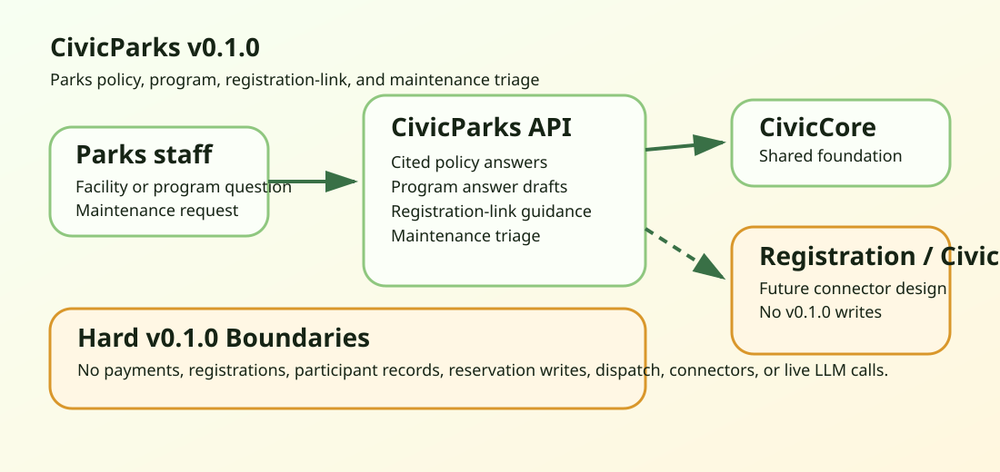

For Staff
Draft policy answers, program replies, registration guidance, and maintenance categories that staff verify before use.
CivicParks helps staff draft cited park-rule answers, explain programs and facilities, link residents to existing registration systems, and triage maintenance requests for staff review.
Draft policy answers, program replies, registration guidance, and maintenance categories that staff verify before use.
FastAPI runtime pinned to civiccore==0.3.0, deterministic tests, and no registration-system writes.
No payments, registrations, participant records, reservation writes, crew dispatch, live LLM calls, or connector runtime.

CivicParks v0.1.1 does not process payments, enroll participants, manage participant records, reserve facilities, dispatch crews, replace Civic311, call live LLMs, or ship parks connector runtime.
Repository: github.com/CivicSuite/civicparks